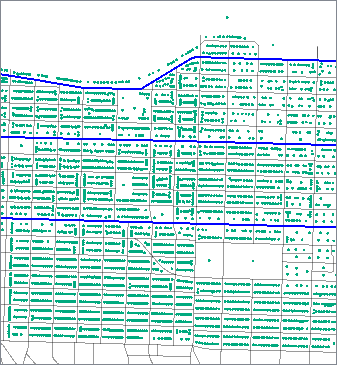

After completing this lesson, you’ll be able to:
As mentioned in the Obtain Insight Through Spatial Analysis lesson, spatial analysis tries to describe, explore, and explain patterns and relationships of topology, geography, and geometry. We use spatial analysis techniques to answer questions about relationships between objects by filtering, measuring, and overlaying spatial data.
We've already looked at filtering and overlaying, but other spatial analysis techniques can be helpful. The methods covered in this lesson let you modify the structure of your spatial data.
There are over 40 spatial analysis transformers included with FME. Here we will introduce a few of the most popular ones.
The Clipper takes two sets of spatial data as inputs. You can think of it as a cookie-cutter. One (the clipper) is the cutter. The other (the clippee) is the cookie. The clipper stamps out shapes in the clippee, creating a new dataset that is the clippee cut to the clipper's boundaries.
This diagram illustrates area-on-line and area-on-area vector clipping results.
The transformer splits both the line and area Clippees where they cross the Clipper boundary and outputs the results:
In terms of set theory, the Clipper looks at the intersection of two data streams.
The Clipper helps you change the boundaries of your data. For example, say you had a dataset of point locations of all the fire halls in a state. If you wanted to extract just the fire halls within a particular city, you could use a polygon of the city boundaries as the clipper and the fire halls as the clippees.
You can also use the Clipper in combination with other spatial analysis transformers. For example, from the example above, say you wanted to know how many schools were within 500 meters of the fire stations. You could use a Bufferer (see below) to create polygons representing all the areas within 500 meters of the fire stations. Then you could use the Clipper with the buffer as the clipper and the fire stations as the clippee.
The Bufferer creates a buffer zone of specified size around or inside input geometry.
Its uses include:
In this example, we buffered arterial roads (shown in blue) to find address points (shown in green) within a fixed distance. Then we connected the buffered roads and address points to a SpatialFilter, identifying the addresses that fall within the buffers (blue points).
 
The Dissolver removes common boundaries to create larger areas. This transformer accepts two-dimensional polygonal features, including donuts, and can optionally accumulate input attributes.
The Dissolver forms dissolved polygons along shared edges, i.e., it removes interior boundaries between adjacent polygons. A common use case for this transformer is to simplify many small features into a more significant single feature. For example, combining multiple counties get a single polygon representing the state.
In terms of set theory, the Dissolver creates a union of multiple streams of features.
The example below shows areas before and after we used a Dissolver transformer on our data.
The Aggregator combines feature geometries into heterogeneous or homogeneous aggregates. Alternatively, it combines feature attributes without any geometry.
The example below illustrates a geometric feature of diverse attributes on the left and its aggregated output on the right.

The Aggregator is commonly used to combine features into an aggregate when building a hierarchical geometry model. For example, you might have a 3D CAD drawing of a house, with the House itself being an aggregate. It contains more aggregates, including Roof and Walls. The Walls are also an aggregate containing four faces. You can use the Aggregator to build these aggregate geometries.
You might use the Aggregator if you had a dataset with duplicate polygons of a state's counties, but you wanted to combine them so you had only a single polygon per county. There are options to control how attributes are combined. The Aggregator is often used with a Group By parameter to control how the transformer aggregates features. In the counties example, the Group By would be an attribute storing the county's name or ID.
You can use the Aggregator on features with or without geometry.